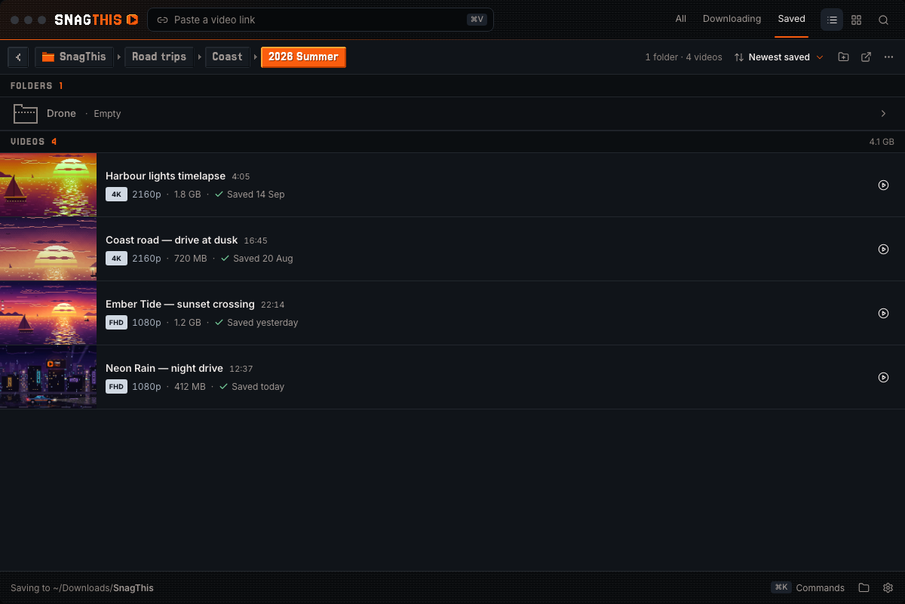
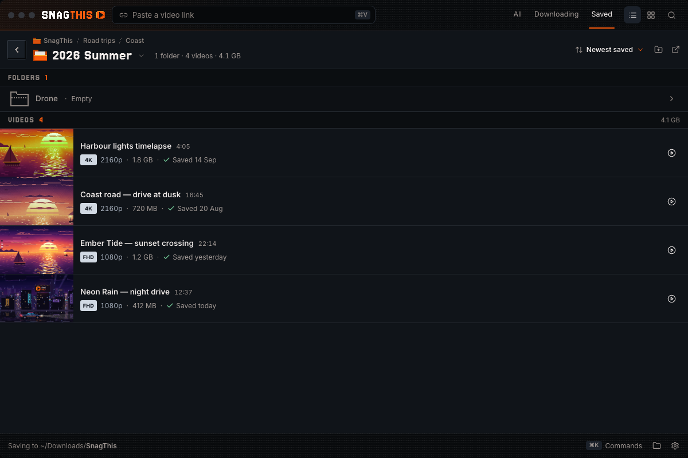
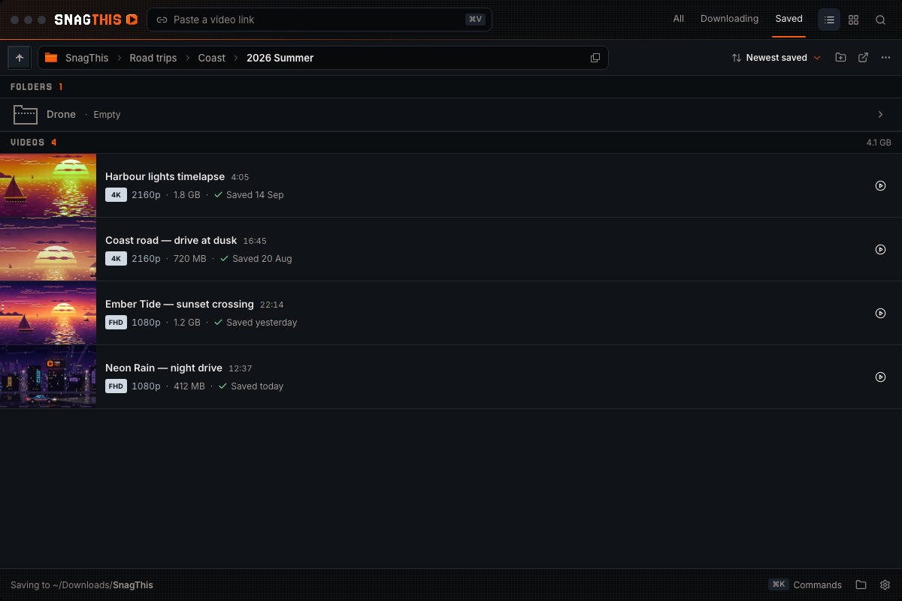

Make the path bar look like SnagThis
Owner: “I also want to improve how this looks. Can you show me some designs on how we could do this, and I'll pick.” Today the bar is a back chevron, “VidSnag › Test › tetst”, then the same path again in grey mono. Each option below uses the same nested Saved folder with folder rows in the chosen Sections style, and shows: at the root, one level, three levels, very long names at a 960px window (with the collapsed … menu open), hover, keyboard focus, dragging a video onto a segment, and how the full disk path is exposed. Open one to click through (keys 1–9), navigate live, drag a real video onto a segment, switch the window width, and try other accents.
Owner choice (2026-09-29): D · Minimal, now in the app (ui-design-spec §6.2).
Pixel tabs
Open →Each folder is a bevelled chip with notched pixel corners in Jersey 15; the current folder is the accent key. Pixel ▸ between chips, a bevelled back key. Path in a hover card with Copy path.

- Best for the most on-brand bar and the loudest “you are here”.
- Cost: pixel font for long folder names; a row of chips is busier.
States: root · one level · long · … menu · hover · focus · drag-over · disk path


Title + trail
Open →The current folder is a heading: pixel folder, name in Jersey 15, “1 folder · 4 videos · 4.1 GB”. A quiet trail of parents above it; bevelled back key. The title opens a menu with the path, Copy path, Rename, Delete.

- Best for the clearest “where am I”, with folder facts and actions in one place.
- Cost: 68px instead of 42px; parent targets are small for drag and drop.
States: root · one level · long · … menu · hover · focus · drag-over · disk path


Address field
Open →A sunken field like the header's paste box holds the trail, file-manager style. Click its empty end (or ⌘L) to edit or copy the path; a copy icon sits at the end. A bevelled Up key in front.

- Best for familiarity and getting at the path in one click.
- Cost: the least pixel of the four; an editable path is a power feature to build.
States: root · one level · long · … menu · hover · focus · drag-over · disk path


Minimal · chosen
Open →Plain segments, pixel “/” separators, current in the accent, a dotted pixel underline on hover. No back button, no path text: the path is in ⋯ ▸ Copy path. Middle folders collapse to ….
- Best for the least visual weight; today's bar, fixed rather than restyled.
- Cost: going up relies on the trail (or ⌘↑); the path is two clicks away.
States: root · one level · long · … menu · hover · focus · drag-over · disk path


The bars side by side
Three levels deep at 1200px, then five levels of long names at 960px. The current bar is included for reference.
Compared
| A · Pixel tabs | B · Title + trail | C · Address field | D · Minimal | |
|---|---|---|---|---|
| Height (today 42px) | 46px | 68px | 48px | 42px |
| Segments | Bevelled pixel chips, Jersey 15 | Small muted trail of parents, Inter 11.5px | Soft segments inside a sunken field | Plain Inter text |
| Current folder | Accent bevel key, white text | Large Jersey 15 title + pixel folder + count · size | Bold, last in the field | Accent-coloured text |
| Separators | Pixel ▸ | Pixel / | Small › | Pixel / |
| Going up | Bevelled back key | Bevelled back key | Bevelled Up key (dimmed at root) | Click a parent, ⌘↑ / Backspace |
| Hover | Chip lifts 1px, brightens | Soft chip behind the name | Soft chip; empty end shows an I-beam | Brighter + dotted pixel underline |
| Keyboard focus | 2px accent ring on the segment (square on A's chips) | |||
| Drag-over | Chip lifts, muted-accent fill, 2px accent border | Solid accent pill, folder opens | Solid accent segment, field border turns accent | Muted-accent fill, solid underline |
| Long paths | Each segment caps with an ellipsis (220–230px, current 360–380px); if it still doesn't fit, folders nearest the save folder fold into one … whose menu is an indented tree. Every item opens its folder and takes drops; hovering … while dragging opens it. | |||
| Full disk path | Hover card on the current chip + Copy path; right-click a chip | Title menu: “On disk” path, Copy path, Show in Finder, Rename, Delete | Click the empty end / ⌘L: editable, selected path + Copy; copy icon at rest | ⋯ ▸ Copy path (path shown under it); right-click a segment |
| Folder ⋯ (Rename, Delete) | Kept | Moves into the title menu | Kept | Kept, also at the root (for Copy path) |
Shared across all four
The grey mono path is gone from the bar in every option. Sort & group (Newest saved), New folder and Show in Finder stay on the right. Every earlier segment opens its folder and takes dropped videos; the drag chip always says Move to {folder}. The pixel folder, bevel keys and accent follow the Settings accent (try the swatches). Folder rows below use folder-rows option C, Sections. All tokens are the app's (globals.css), with Jersey 15 and Inter.
Questions for the owner
- How loud? A and B bring the pixel font and accent into the bar; C and D stay quiet like today.
- Back button: keep one (A, B, C) or rely on the trail and ⌘↑ (D)?
- The path: is a hover card (A), a title menu (B), an editable field (C) or a Copy path menu item (D) enough, or do you want it visible somewhere by default?
- Mix and match: the path treatments are independent, e.g. D's look with C's click-to-edit, or A's chips with B's title menu.
0 · Current baseline
PathBar.tsx+organize.css: lucide chevrons, flat 13px text, current bold, then.path-textin grey mono repeating the same path.- No collapse: at 960px with long names the crumbs and the path simply clip (screenshot).
- Drop target is a faint tint (screenshot).